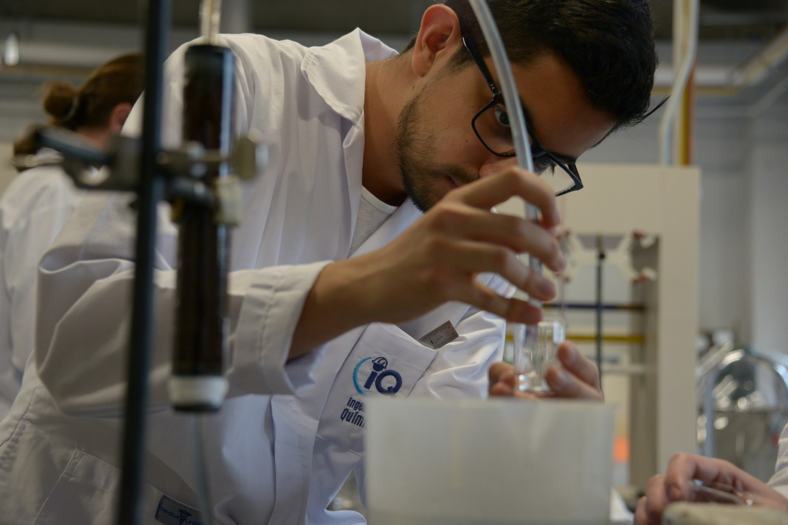
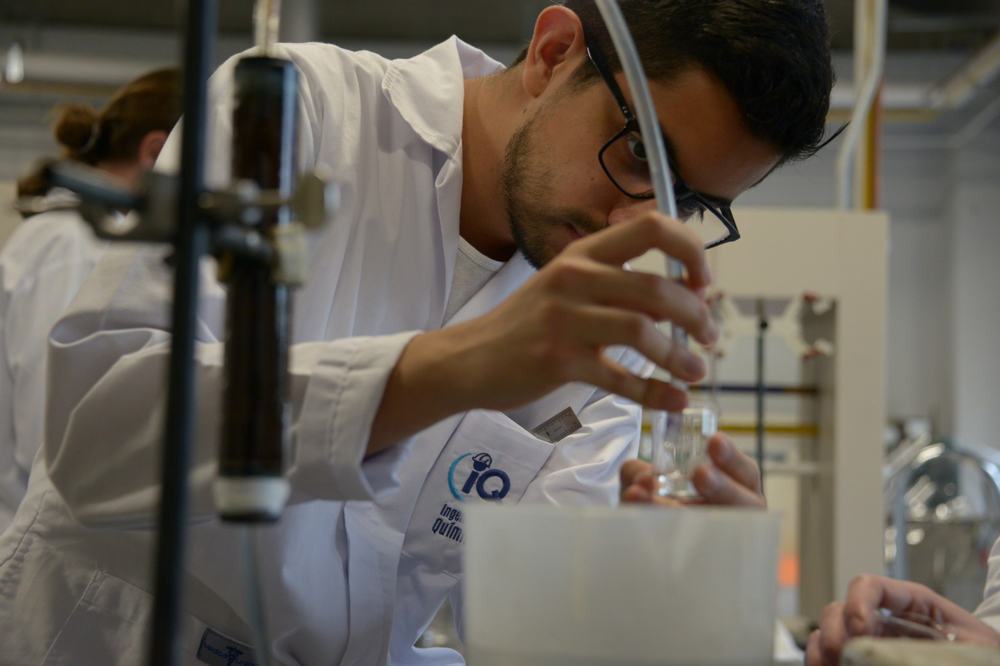

Ingeniería en softoware
Durante este evento, los estudiantes de ingeniería en computación del
Tecnológico de Costa Rica estarán presentando sus proyectos de la materia "Proyecto de ingeniería
en softoware" y podrán compartir con estudiantes de colegios de todo el país.

Los beneficios
A todos aquellos estudiantes de colegios que participen de este evento
se les podría dar:
- Stickers
- Llaveros
- Botellas reutilizables
- Invitación a una clase gratuita de programación
Además, se hará un concurso para aquellos estudia ntes que lleven un proyecto
programado donde se entregarán los siguientes premios:
- Laptop HP(RAM: 16 GB, INTEL CORE !5)
- iPad de última generación
- Perifericos(Audifonos, mouse y teclado)
Ingeniería Mecatrónica
Como la ciencia nos beneficia a todos, los estudiantes de ingeniería
mecatrónica en colaboración con los estudiantes de la misma carrera de universidad Invenio
han desarrollado novedosos proyectos que los profesionales indican serán escensiales en el futuro
Como invitado especial tendremos a Michael Jackson, uno de los principales padres de la ingeniería mecatrónica
que al escuchar del evento dijo "Yo me apunto al evento" y junto a la administracción
se coordinó la charla que impartirá este grandioso día. Más adelante se detallarán los eventos en la Agenda

Química
Estudiantes de diferentes carreras que se preparan en cursos de química desarrollarán ingeniosos e interesantes
proyectos científicos para conocer acerca de todos los elementos que rodean nuestro entorno. Desde volcanes de lava
hasta explosiones controladas en laboratorios.
Además serán estos los encargados bajo supervisión del Licenciado en bioquímica y coordinador de la carrera de
ingeniería en Biotecnología del centro académico de Limón Cristiano Ronaldo en desarrollar el taller de química básica
para todos los interesados que participen en el evento.
 
